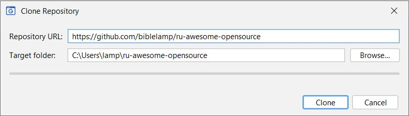
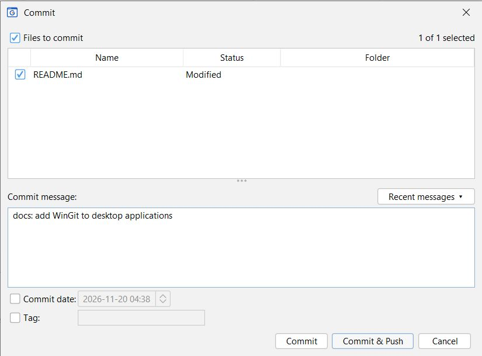
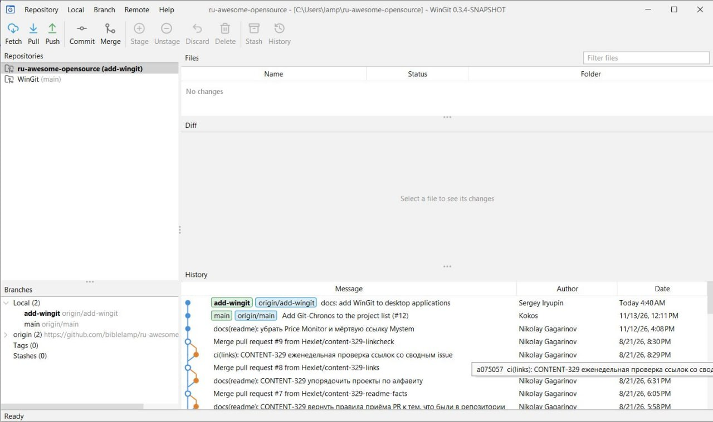

WinGit
WinGitНачало работы
От установки до первого коммита — около 15 минут. Опыт работы с Git не нужен.
-
Установите Git
Для коммитов и связи с сервером WinGit использует Git, установленный на компьютере. Скачайте Git for Windows, запустите установщик и оставьте все настройки по умолчанию.
В Linux установите пакет
gitиз своего дистрибутива, напримерsudo apt install git. -
Сообщите Git своё имя и почту
Git записывает их в каждый коммит и без них коммит не создаёт. Это делается один раз. Откройте командную строку (меню «Пуск», наберите cmd, нажмите Enter) и выполните две команды, подставив своё имя и почту:
git config --global user.name "Ivan Petrov" git config --global user.email "ivan@example.com"
Если вы пользуетесь GitHub, укажите почту своего аккаунта GitHub — тогда коммиты будут связаны с вашим профилем.
-
Установите WinGit
Откройте WinGit в Microsoft Store и нажмите Получить. WinGit появится в меню «Пуск», а Store будет сам её обновлять.
Microsoft Store недоступен? Скачайте установщик (MSI) на главной странице и запустите его. Не хотите ничего устанавливать? Скачайте ZIP, распакуйте в любую папку и запустите
WinGit.exe. -
Добавьте репозиторий
Репозиторий — это папка проекта, историю которой хранит Git. Добавить его можно двумя способами:
- С сервера (GitHub, GitLab, …): Repository → Clone… (Ctrl+Shift+O), вставьте адрес репозитория, например
https://github.com/user/project.git, выберите папку и нажмите Clone. - Папка на диске: Repository → Add or Create… (Ctrl+O) и выберите папку. Если это ещё не репозиторий, WinGit предложит его создать.
Репозиторий сразу откроется и останется в списке слева; в следующий раз открывайте его двойным щелчком.
При первом подключении к серверу Git может открыть окно входа (Git Credential Manager). Войдите как обычно: WinGit не видит и не хранит ваш пароль.

- С сервера (GitHub, GitLab, …): Repository → Clone… (Ctrl+Shift+O), вставьте адрес репозитория, например
-
Посмотрите изменения
Измените любой файл в папке репозитория. WinGit заметит это и покажет файл в списке Files. Щёлкните по нему: в Diff слева будет прежняя версия, справа — ваша, изменённые строки выделены. Двойной щелчок по файлу откроет сравнение на весь экран.
Красное название репозитория в списке означает, что в нём есть изменения, ещё не попавшие в коммит.

Новые строки справа выделены зелёным. -
Сделайте коммит
Коммит сохраняет снимок ваших изменений в истории. Нажмите Commit на панели кнопок (Ctrl+K), отметьте нужные файлы, коротко опишите, что изменили, и нажмите Commit. Commit & Push сразу же отправит коммит на сервер.
Новый коммит появится вверху History. Что-то забыли? Пока коммит не отправлен, отметьте в том же окне Изменить последний коммит — он будет исправлен, а не создан новый.

-
Pull и push
- Push (Ctrl+Shift+K) отправляет ваши коммиты на сервер.
- Pull (Ctrl+T) забирает коммиты, которые отправили другие.
- Fetch только проверяет, что нового на сервере, и не меняет ваши файлы. Если иконка репозитория стала зелёной — есть что забрать через Pull. WinGit делает Fetch и сам, в фоне; интервал задаётся в Настройках.

После Commit & Push ветка и её копия origin/…указывают на один и тот же коммит — он уже на сервере.


Что-то не получилось?
Откройте Help → About WinGit и нажмите Copy Details. Затем выберите Help → Report an Issue (нужен аккаунт GitHub), опишите, что вы делали и что произошло, и вставьте скопированные сведения.
Нет аккаунта GitHub или просто есть вопрос? Напишите в чат в Telegram.